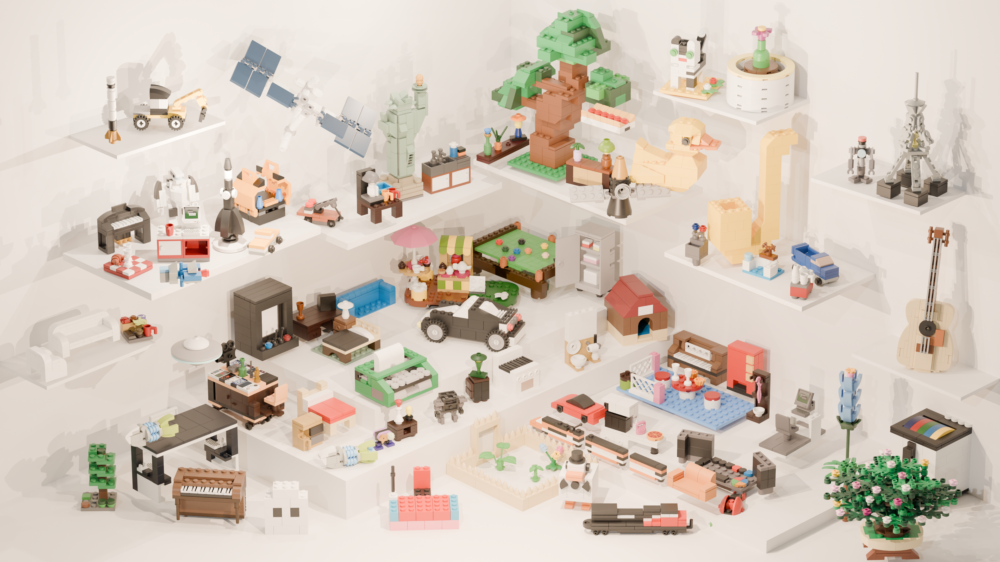

From an idea
to a buildable model.
Scroll to explore
Language-guided brick assembly
DailyBrick: Language-Guided Synthesis of Brick Assembly Instructions

Abstract
Generating a LEGO model from a user request is more than generating a plausible 3D shape. LEGO models require physical support for each brick, and each brick must be placed without obstruction. Current methods address this issue by training an expert large language model. We ease the problem of generating extremely long context for all brick connections by writing a program that builds LEGO models like a human, considering whether each intermediate step can be executed.
We introduce DailyBrick, a multi-stage agentic system that produces a LEGO model together with brick-by-brick assembly instructions for human building and robot assembly. We design a multi-stage harness with roles to help LLMs generate more effectively. A versioned construction SDK compiles multi-level decisions, from semantic subparts to individual bricks, into canonical operations.
An external Meta-Reviewer agent replays and inspects the generated package, verifies the model and its construction process, identifies failures, traces them to the responsible stage, and routes them to bounded repairs or to auditable candidates for later skill or tool updates. Extensive experiments demonstrate that DailyBrick generates LEGO models from simple user requests better than recent agentic systems, and show its utility in downstream applications such as robot manipulation for model assembly from instructions and brick sets.
The demonstration